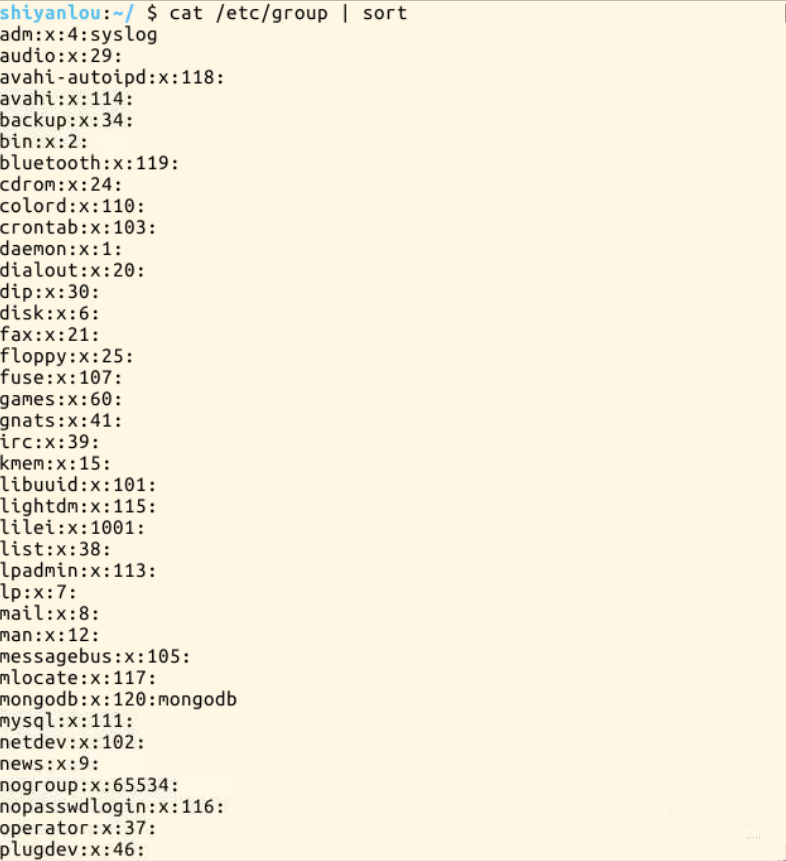
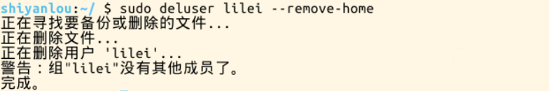
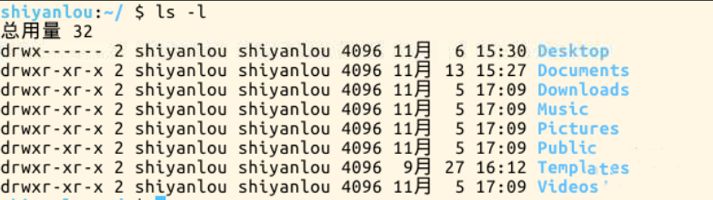
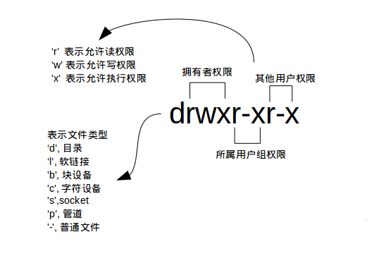
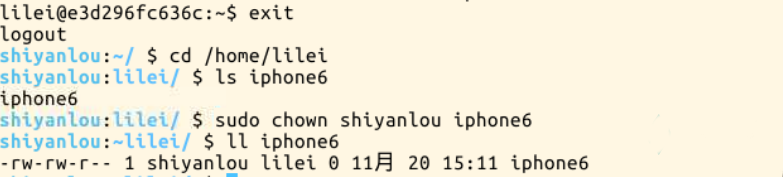
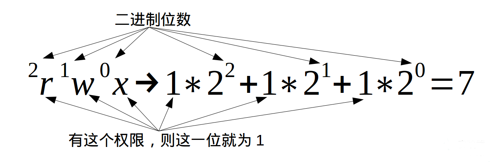
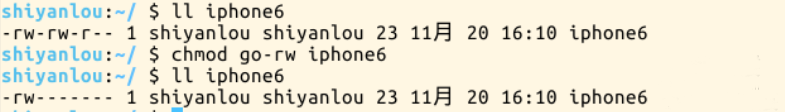
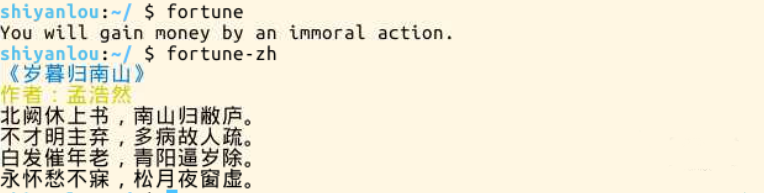

用户及文件权限管理
一、linux用户管理
通过第一节课程的学习，你应该已经知道，linux是一个可以实现多用户登陆的操作系统，比如李雷和韩梅梅都可以同时登陆同一台主机，他们共享一些主机的资源，但他们也分别有自己的用户空间，用于存放各自的文件。但实际上他们的文件都是放在同一个物理磁盘上的甚至同一个逻辑分区或者目录里，那么是不是说李雷就可以轻易查看到韩梅梅的自拍照，韩梅梅也可以看到李雷写给她表白情书呢。当然不是这样，linux才不会这么不安全，这正是它的用户管理和权限机制要完成的工作。
下面我们就来学习一下linux下的账户管理的基础知识
哲学问题
作为一个linux用户，一个人类，我们的终极目标便是思考和解决那三大哲学问题：我是谁?我从哪里来?我要到哪里去?。其实吧，这几个问题我早就明白了，就在我学了linux之后，你如果还没想明白， 就继续往下学吧。关于我是谁？
看好了哈，请打开终端，输入命令：
$ who am i
如果你今天心情不好，因为妈妈把鸡腿给了姐姐吃，然后你就有点郁闷，想知道妈妈到底喜欢谁，那么你也可以问linux
$ who mom likes
输入的第一列表示打开当前伪终端的用户的用户名（要查看当前登录用户的用户名，去掉空格直接使用whoami即可），第二列的pts/0中pts表示伪终端，
所谓伪是相对于/dev/tty设备而言的，还记得上一节讲终端时的那七个使用[Ctrl]+[Alt]+[F1]～[F7]进行切换的/dev/tty设备么,这是“真终端”，
伪终端就是当你在图形用户界面使用/dev/tty7时每打开一个终端就会产生一个伪终端，pts/0后面那个数字就表示打开的伪终端序号，你可以尝试再打开一个终端，
然后在里面输入who am i，看第二列是不是就变成pts/1了，第三列则表示当前伪终端的启动时间。
who命令其它常用参数
参数说明:
-a- 打印能打印的全部
-d- 打印死掉的进程
-m- 同
am i,mom likes -q- 打印当前登录用户数及用户名
-u- 打印当前登录用户登录信息
-r- 打印运行等级
关于我从哪里来?
简单来说就是“上帝”一个人太寂寞于是它创造了人类。好吧，勉强认可这个答案，那么谁又是上帝呢？在linux的世界里，上帝必然就是root账户了，它拥有整个系统至高无上的权利，比如分分钟创造个“人”（新建/添加用户）出来。
root权限，系统权限的一种，与SYSTEM权限可以理解成一个概念，但高于Administrator权限，root是Linux和unix系统中的超级管理员用户帐户，该帐户拥有整个系统至高无上的权力，所有对象他都可以操作，所以很多黑客在入侵系统的时候，都要把权限提升到root权限，用windows的方法理解也就是将自己的非法帐户添加到Administrators用户组。更比如安卓操作系统中（基于linux内核）获得root权限之后就意味着已经获得了手机的最高权限，这时候你可以对手机中的任何文件（包括系统文件）执行所有增、删、改、查的操作。
下面我就来扮演一次上帝，立马“造个人”出来。不过在“造人”之前要先明白一个问题，我们一般登录系统时都是以普通账户的身份登录的，也就是说我就是个普通人，那么我怎么添加用户呢，一般人又没有那能力。嘿嘿，都说了是扮上帝的嘛，这里就要用到sudo这个命令了。不过使用这个命令有两个大前提，一是你要知道当前登录用户的密码，二是当前用户必须在sudo用户组。shiyanlou用户的密码就是“shiyanlou”嘛，它同时也属于sudo用户组(稍后会介绍如何查看和添加用户组)，那就开始动手吧
新建一个叫lilei的用户：
$ sudo adduser lilei
按照提示输入shiyanlou密码（linux下密码输入通常都是不可见的），然后是给lilei用户设置密码，后面的选项的一些内容你可以选择直接回车使用默认值

这个命令不但可以添加用户到系统，同时也会默认为新用户创建home目录
$ ls /home
现在你已经创建好一个用户，并且你可以使用你创建的用户登录了，使用如下命令切换登录用户
$ su -l lilei
按照提示输入shiyanlou密码（linux下密码输入通常都是不可见的），然后是给lilei用户设置密码，后面的选项的一些内容你可以选择直接回车使用默认值
退出当前用户跟退出终端一样可以使用exit命令或者使用快捷键Ctrl+d
关于我要到哪儿去？
人生来就是“群居”动物，一个人不能总是独孤一人，生活中我们总需要互相依靠，需要找寻自己的归属。那我个人认为“家”必然才是我们最好也是最终的归属吧。可能你会说你的归属是天堂，那也没问题。我们这里就来讨论下归属问题，那么你到底是会归属哪儿呢。
在linux里面每个用户都有一个归属（用户组），用户组简单地理解就是一组用户的集合，它们共享一些资源和权限，同时拥有私有资源，就跟家的形式差不多，你的兄弟姐妹（不同的用户）输入同一个家（用户组），你们可以共同拥有这个家（共享资源），你爸妈对待你们都一样（共享权限），你偶尔写写日记，其他人未经允许不能查看（私有资源和权限）。当然一个用户是可以属于多个用户组的，正如你既属于家庭，又属于学校或公司。
在linux里面如何知道自己属于哪些用户组呢
方法一：使用groups命令
$ groups shiyanlou
其中冒号之前表示用户，后面表示该用户所属的用户组。这里可以看到shiyanlou用户同时属于shiyanlou和sudo用户组，每次新建用户如果不指定用户组的话，默认会自动创建一个与用户名相同的用户组（差不多就相当于家长的意思，或者说是老总），这里你要特别注意那个sudo用户组，如果你没在这个sudo用户组那么你是不能使用sudo命令的，即你是无法临时获得管理员权限，后面会讲如何将已有用户加入到sudo用户组
方法二：查看/etc/group文件
$ cat /etc/group | sort
这里cat命令用于读取指定文件的内容并打印到终端输出，后面会详细讲它的使用.| sort表示将读取的文本进行一个字典排序再输出，然后你将看到如下一堆输出，你可以在最下面看到shiyanlou的用户组信息
没找到，没关系，你可以使用命令过滤掉一些你不想看到的结果
$ cat /etc/group | grep -E "shiyanlou|sudo"
etc/group文件格式说明
/etc/group的内容包括用户组（Group）、用户组口令、GID及该用户组所包含的用户（User），每个用户组一条记录。格式如下：
group_name:password:GID:user_list
你看到上面的password字段为一个'x'并不是说密码就是它，只是表示密码不可见而已
将其它用户加入sudo用户组
默认情况下新创建的用户是不具有root权限的，也不在sudo用户组，也就无法通过sudo命令临时获取root权限
$ su -l lilei
$ sudo ls
会提示lilei不在sudoers文件中...,意思就是lilei不在sudo用户组中，至于sudoers文件(/etc/sudoers)你现在最好不要动它，操作不慎会导致比较麻烦的后果。
使用usermod命令可以为用户添加用户组，同样使用该命令你必需有root权限，你可以直接使用root用户为其它用户添加用户组，或者用其它已经在sudo用户组的用户使用sudo命令获取权限来执行该命令
这里我用shiyanlou用户执行sudo命令将lilei添加到sudo用户组，让它也可以使用sudo命令获得root权限后果。
$ su shiyanlou
$ groups lilei
$ sudo usermod -G sudo lilei
$ groups lilei
然后你再切换会lilei用户，现在就可以使用sudo获取root权限了。
上帝说我要抹杀掉你？
上帝怒了，要从他世界里抹掉某个人的存在，那对他来说也是相当简单啊
$sudo deluser lilei --remove-home

二、linux文件权限
1.查看文件权限
我们之前已经很多次用到ls命令了，如你所见，我们用它来列出并显示当前目录下的文件，当然这是在不带任何参数的情况下, 它能做的当然不止这么多，现在我们就要用它来查看文件权限
使用较长格式列出文件
$ ls -l

你可能除了知道最后面那一项是文件名之外，其它项就不太清楚了，那么到底是什么意思呢
可能你还是不太明白，比如第一项文件类型和权限那一堆东西具体指什么，链接又是什么，何为最后修改时间，下面一一道来
- 文件类型
- 文件权限
- 链接数
- 文件大小
- 显示所有文件大小，并以普通人类能看懂的方式呈现
关于文件类型，这里有一点你必需时刻牢记linux里面一切皆文件，正因为这一点才有了设备文件（/dev目录下有各种设备文件，大都跟具体的硬件设备相关）这一说，还有socket（网络套接字，具体是什么，感兴趣的用户可以自己去了解或期待实验楼的后续相关课程），和pipe(管道，这个东西很重要，我们以后将会讨论到，这里你先知道有它的存在即可)。软链接文件，链接文件是分为两种的，另一种当然是“硬链接”(硬链接不常用，具体内容不作为本课程讨论重点，而软链接等同于windows上的快捷方式,你记住这一点就够了）
读权限，表示你可以使用cat 之类的命令来读取某个文件的内容;写权限，表示你可以编辑和修改某个文件； 执行权限，通常指可以运行的二进制程序文件或者脚本文件，如同windows上的'exe'后缀的文件，不过linux上不是通过文件后缀名来区分文件的类型。你需要注意的一点是，一个目录要同时具有读权限和执行权限才可以打开，而一个目录要有写权限才允许在其中创建其它文件，这是因为目录文件实际保存着该目录里面的文件的列表等信息
所有者权限，这一点相信你应该明白了，至于所属用户组权限，是指你所在的用户组中的所有其它用户对于该文件的权限，比如，你有一个艾派德,那么这个用户组权限就决定了你的兄弟姐妹有没有权限使用它破坏它和占有它。
链接到该文件所在的inode结点的文件名数目（关于这个概念涉及到linux文件系统的相关概念知识，不在本课程的讨论范围，感兴趣的用户可以自己去了解)
以inode结点大小为单位来表示的文件大小，你可以给ls加上-lh参数来更直观的查看文件的大小
明白了文件权限的一些概念，我们顺带补充一下关于ls命令的一些其它常用的用法
$ ls -A
当然，如果你觉得不爽，你可以同时使用'-A'和'-l'参数
$ ls -Al
查看某一个目录的完整属性，而不是显示目录里面的文件属性
$ls -dl <目录名>
$ls -AsSh
其中小s为显示文件大小，大S为按文件大小排序，若需要知道如何按其它方式排序，请找“男人”帮忙
2.变更文件所有者
前面提到过，如果你的兄弟姐妹想把你的艾派德据为己有,要是这种事真的发生了，那么我也告诉你如何把他们的爱疯嗯6抢过来
不信的话我们可以来做个小测试，首先打开终端
假设目前是lilei登录,他用他存了半年零花钱买了个爱疯嗯6
$touch iphone6
瞧你嘚瑟，居然还打上了自己专属标签
好了他出门，忘记带走他的手机了，先去他房间，准备好下手
$cd /home/lilei
$ls iphone6
$sudo chown shiyanlou iphone6
$cp iphone6 /home/shiyanlou
然后再来看看爱疯恩6是不是就变成你的了
哈哈，就这么简单，关键就在于那个chown命令。不过，你要干这个的大前提是你得得到你爸妈也就是你家里的上帝（root权限）的同意啊,不然你可干不了这种事
3.修改文件权限者
我这里假设你已经把那部爱疯恩变成你自己的了，正所谓辛苦得来的就倍感珍惜，你想好好保护它，也不像让别人玩它，那么你可以去掉它的读权限，如果你还想让它变成一件收藏品不再开机，那么你可以去掉它的执行权限。下面来告诉你怎么做，这里也还有两种方式：
- 方式一：二进制数字表示
二进制懂吧，二进制转十进制懂吧，好吧，不懂也没关系
每个文件的三组权限（拥有者，所属用户组，其他用户,记住这个顺序是一定的哈）就对应这一个"rwx"，也就是一个'7',所以如果我要将爱疯恩的权限改为只有我自己可以用那么就这样:
$echo "echo \"hello shiyanlou\"" > iphone6
然后修改权限
$chmod 700 iphone6
正好这时候李雷回来了，他发现爱疯恩已经不属于他了，而且你还不允许他使用，他只有独自郁闷了
完成上述相同的效果，你可以
$chmod go-rw iphone

'g''o'还有'u'，分别表示group，others，user,'+','-'就分别表示增加和去掉相应的权限
三、更多
linux还有一些关于隐藏权限和特殊权限的内容，想全面了解linux权限管理这部分内容的用户可以通过其他方式学习
这一节的介绍一个随机输出一句英文名言或者一首唐诗宋词的命令fortune
还是先看效果
安装
$ sudo apt-get update go-rw iphone install fortune-mod fortune-zh